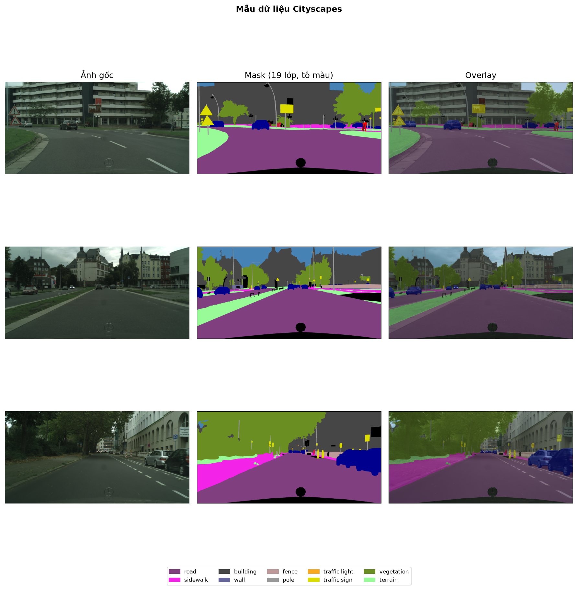
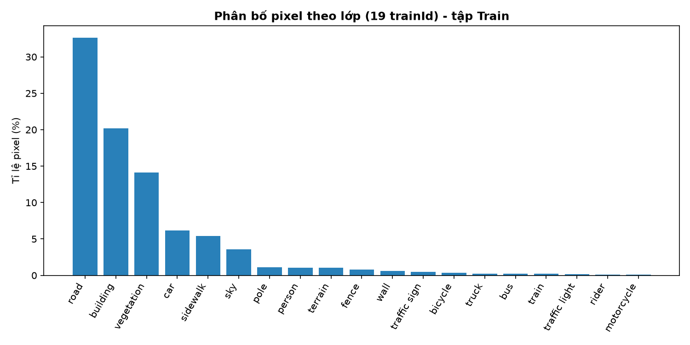
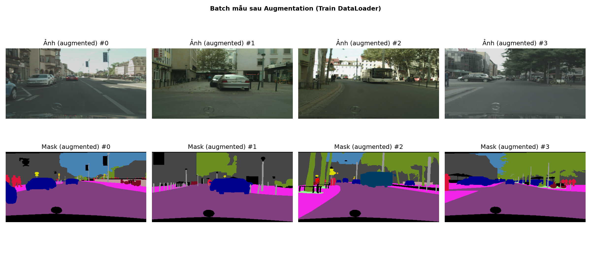

Nhóm: AutoVision | Sinh viên: Nguyễn Trần Phước (MSSV: 2470576)
Chủ đề đã chọn (Mốc A2.1): Chủ đề 1 — Phân đoạn ảnh ngữ nghĩa (Urban Road-Scene Semantic Segmentation for Autonomous Driving)
Trong hệ thống hỗ trợ lái xe tiên tiến (ADAS) và xe tự hành (Autonomous Driving), việc hiểu cảnh đường giao thông tới mức độ từng điểm ảnh (pixel-level semantic segmentation) đóng vai trò cốt lõi để xác định vùng mặt đường có thể di chuyển, vỉa hè, phương tiện, người đi bộ và hệ thống biển báo/đèn tín hiệu. Đề tài này xây dựng pipeline phân đoạn ngữ nghĩa trên tập dữ liệu chuẩn công nghiệp Cityscapes và phân tích chuyên sâu kiến trúc SegFormer (NeurIPS 2021) đối sánh với nhánh mạng tích chập DeepLabV3+ / U-Net.
Tập dữ liệu: Cityscapes Dataset (Fine Annotations) — thu thập từ camera hành trình gắn trên ô tô tại 50 thành phố châu Âu.
1024 × 2048 được gán nhãn pixel chi tiết:
road, sidewalk), Construction (building, wall, fence), Object (pole, traffic light, traffic sign), Nature (vegetation, terrain), Sky (sky), Human (person, rider), và Vehicle (car, truck, bus, train, motorcycle, bicycle), cùng nhãn ignore_index = 255.

road 32.64%, building 20.21%, vegetation 14.10%) chiếm tới hơn 66% tổng số pixel, trong khi các lớp quan trọng về an toàn giao thông như traffic light (0.18%), traffic sign (0.49%), rider (0.12%), motorcycle (0.09%) chỉ chiếm dưới 0.5% diện tích ảnh. Điều này ảnh hưởng trực tiếp tới lựa chọn hàm mất mát ở mục 4 (kết hợp Cross-Entropy với Dice Loss để tránh mô hình chỉ học tốt các lớp nền phổ biến).
trainId chuẩn (từ 0 đến 18), các lớp nền phụ/vùng biên gán về ignore_index = 255.RandomResizedCrop / Resize về kích thước 512 × 1024 (giữ nguyên tỷ lệ khung hình 1:2 của camera ô tô).RandomHorizontalFlip(p=0.5) và ColorJitter (thay đổi độ sáng, tương phản để mô phỏng biến thiên ánh sáng ngoài trời).mean=[0.485, 0.456, 0.406], std=[0.229, 0.224, 0.225].
Trích dẫn (Citation):
Enze Xie, Wenhai Wang, Zhiding Yu, Anima Anandkumar, Jose M. Alvarez, and Ping Luo, "SegFormer: Simple and Efficient Design for Semantic Segmentation with Transformers", in Advances in Neural Information Processing Systems (NeurIPS), vol. 34, pp. 12077–12090, 2021.
Liên kết: arXiv:2105.15203 | Official GitHub (NVlabs/SegFormer)
1/4, 1/8, 1/16, 1/32) thông qua Overlapping Patch Merging, kết hợp cơ chế Efficient Self-Attention (giảm chiều chuỗi với tỷ lệ R) và khối Mix-FFN dùng 3×3 Depthwise Conv để loại bỏ hoàn toàn Positional Encoding cố định.3.7M tham số nhưng đạt độ chính xác vượt trội và tốc độ suy luận cao trên cảnh đường Cityscapes.Nhóm thiết kế pipeline đối sánh trực tiếp giữa hai họ kiến trúc CNN và Hierarchical Vision Transformer cùng khảo sát hàm mất mát (Loss Ablation):
| Cấu hình | Kiến trúc Mô hình | Backbone | Hàm mất mát (Loss) | Mục tiêu đối sánh |
|---|---|---|---|---|
| Model 1 (Baseline) | DeepLabV3+ / U-Net | ResNet-50 / ResNet-34 (CNN) | Cross-Entropy + Dice | Đại diện nhánh CNN tích chập đa tỷ lệ (ASPP) |
| Model 2 (Paper) | SegFormer-B0 | MiT-B0 (Hierarchical ViT) | Cross-Entropy + Dice | Đánh giá hiệu năng & tốc độ của Transformer |
| Model 2a (Ablation) | SegFormer-B0 | MiT-B0 (Hierarchical ViT) | Cross-Entropy thuần | Đánh giá tác động của Dice Loss lên các lớp nhỏ |
(Đang cập nhật cho mốc A2.2 — Hạn nộp 16/11/2026) Bảng kết quả định lượng (mIoU, mDice, FPS, Per-class IoU trên 19 lớp), trực quan hóa bản đồ phân đoạn dự đoán so với Ground Truth và phân tích các trường hợp lỗi (failure cases) sẽ được bổ sung đầy đủ ở mốc A2.2.